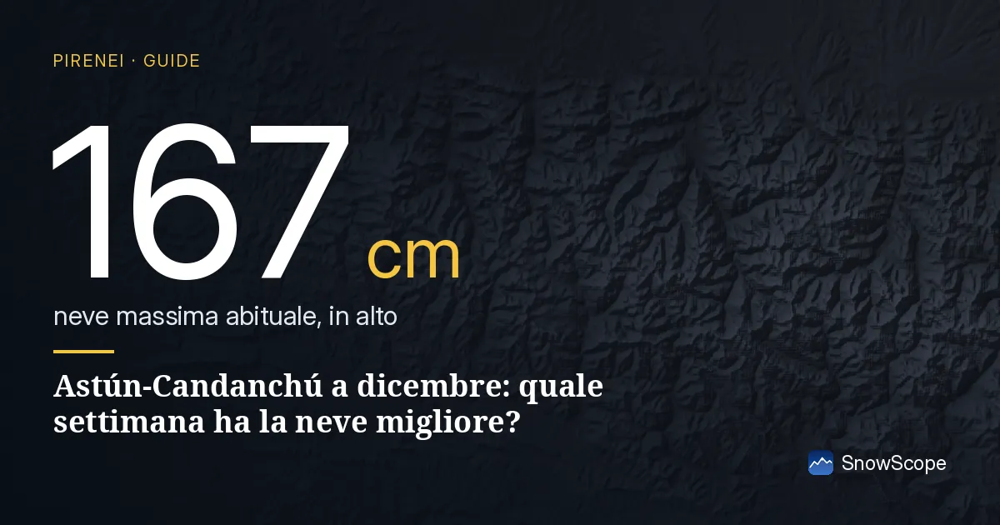

Astún-Candanchú a dicembre: quale settimana ha la neve migliore?
Se stai organizzando una settimana in famiglia a basso costo a dicembre ad Astún-Candanchú, in Spagna, prenota dal 22 al 28 dicembre e resta sulle piste di metà montagna e alte. A inizio dicembre la base è spesso scarsa; l'ultima settimana intera del mese offre la migliore probabilità di neve naturale.
Le previsioni neve in tempo reale per Astún-Candanchú nell'app SnowScopeAltezza neve, allerte powder e mappa 3D, gratis.
Due stazioni su un unico pass famiglia
Astún-Candanchú unisce due stazioni in Spagna con un pass congiunto. L'area sciistica mappata conta 35 km di piste e 17 impianti, salendo da 1.659 m a 2.272 m (613 m di dislivello). Per la stagione 26-27, i prezzi verificati sono 54,50 EUR online o 59,50 EUR alla cassa per un pass giornaliero adulto.
Non viene venduto un pass da 6 giorni per una settimana in famiglia. Invece, un pass adulto da 5 giorni acquistato online per la stagione 26-27 costa 237,00 EUR, così sai già quanto spenderai prima di scegliere le date.

Aspettare fine dicembre
Il nostro storico di 46 inverni passati (1980-81 al 2025-26) mostra che inizio dicembre è spesso poco innevato alla base di 1.659 m. La quota di inverni passati con 30 cm o più alla base degli impianti è del 20 % dall'1 al 7 dicembre, 33 % dall'8 al 14 dicembre, 35 % dal 15 al 21 dicembre e 41 % dal 22 al 28 dicembre. Per 50 cm o più, la base raggiunge solo il 9 %, 13 %, 15 % e 17 % in quelle quattro settimane.
Più in alto, la settimana dal 22 al 28 dicembre è la migliore per le famiglie. A mezza montagna (1.965 m), 30 cm o più appaiono nel 35 %, 39 %, 46 % e 63 % degli inverni passati nelle quattro settimane di dicembre, mentre 50 cm o più raggiungono il 17 %, 30 %, 28 % e 37 %. In cima a 2.272 m, 30 cm o più raggiungono il 52 % dall'1 al 7 dicembre, il 57 % dall'8 al 14 e dal 15 al 21 dicembre, e il 67 % dal 22 al 28 dicembre (50 cm o più: 24 %, 30 %, 39 % e 48 %).
Il 13 novembre 2026, la stima della neve è di 0 cm alla base, a mezza montagna e in vetta, con 0 cm di neve fresca prevista nei prossimi 7 giorni alla base e a mezza montagna e 7 cm in vetta. Le previsioni a due settimane (dal 13 al 26 novembre 2026) danno un range da 5 cm a 30 cm sopra mezza montagna, indicando un inizio lento.
Neve alla base, a mezza montagna e in vetta
Le profondità solite di dicembre mostrano perché l'altezza conta. In un dicembre normale, la neve media è di 18 cm alla base (13 cm il 15 dicembre), 28 cm a mezza montagna (20 cm il 15 dicembre) e 38 cm in vetta (29 cm il 15 dicembre). Un dicembre magro (1 inverno su 10) scende sotto i 2 cm, 5 cm e 6 cm, e il 1989-90 ha avuto una media di 1 cm alla base e 2 cm più in alto.
Un dicembre ricco (1 inverno su 10) supera i 58 cm alla base, 80 cm a mezza montagna e 104 cm in vetta; il 2021-22 ha avuto una media di 85 cm, 114 cm e 142 cm. La neve persistente solita inizia il 7 novembre (base), il 5 novembre (mezza montagna) e il 3 novembre (vetta), arrivando a picchi di 94 cm, 131 cm e 167 cm.
Confronto con Baqueira Beret
Baqueira Beret in Spagna è molto più grande, con 154 km di piste e 36 impianti da 1.504 m a 2.600 m (1.096 m di dislivello). Per la stagione 2026-27, un 'Baqueira Ticket' giornaliero adulto costa 74,00 € (70,00 € con la carta ricaricabile 'Baqueira Pass') e un 'Baqueira Ticket' da 6 giorni costa 359,00 €, rispetto ai 54,50 EUR (giornaliero online) e 237,00 EUR (5 giorni online) di Astún-Candanchú.
Nel nostro storico, Astún-Candanchú ha più neve abituale a dicembre rispetto a Baqueira Beret a ogni livello. Baqueira Beret ha una media di 8 cm alla base di 1.504 m (scarsa 0 cm, abbondante sopra 37 cm), 20 cm a 2.052 m (scarsa sotto 2 cm, abbondante sopra 56 cm) e 30 cm a 2.600 m (scarsa sotto 3 cm, abbondante sopra 77 cm). Le sue quote per 30 cm o più dal 22 al 28 dicembre sono 20 % (base), 41 % (mezza montagna) e 59 % (vetta), sotto il 41 %, 63 % e 67 % di Astún-Candanchú.
Meno neve a dicembre negli ultimi inverni
Quando pianifichi, ricorda che la neve di dicembre è diminuita negli ultimi anni. A metà dei primi 15 inverni (1980-81 al 1994-95), Astún-Candanchú aveva una media di 20 cm alla base, 29 cm a mezza montagna e 39 cm in vetta. Negli ultimi 15 inverni (2011-12 al 2025-26), quei numeri sono scesi a 15 cm, 23 cm e 32 cm, in linea con lo scorso dicembre (2025-26).
Consigli per sciatori
- Scegli dal 22 al 28 dicembre per la tua settimana in famiglia, quando a mezza montagna si raggiungono 30 cm o più nel 63 % degli inverni passati e in vetta nel 67 %.
- Scia principalmente a mezza montagna (1.965 m) e in vetta (2.272 m), dato che la base a 1.659 m ha solo 18 cm in media in un dicembre normale.
- Prenota il pass sul sito ufficiale per pagare 54,50 EUR per 1 giorno invece di 59,50 EUR, o 237,00 EUR per 5 giorni.
- Controlla il bollettino valanghe prima di ogni fuori pista, specialmente dopo neve fresca sui pendii alti.
Altre mappe (siti esterni)
Riferimenti e crediti
- Astún, official lift pass prices (tarifas 26-27) astun.com/forfaits/
- Baqueira Beret, official prices (tarifas), season 26-27 www.baqueira.es/es/tarifas
- SnowScope, December snow at three heights and today's snow map snowscope.app/
Su questi numeri
Numeri della neve: storico neve SnowScope, 46 inverni passati (1980-81 - 2025-26) a tre quote di ogni località (un modello del passato corretto per la quota: una stima per un'area, non misure della località); dati di dicembre calcolati dalle altezze giornaliere di quegli inverni. Neve attuale e tendenza a due settimane: previsioni SnowScope (tendenza da ECMWF e GFS, un intervallo, non una promessa). Impianti e piste: mappatura OpenSkiMap. Prezzi: le pagine ufficiali qui sotto, lette il 2026-11-13; i prezzi possono cambiare, verificare prima di prenotare.
Bollettini valanghe ufficiali: AEMET – Boletín de peligro de aludes (Pirineo aragonés)
Cita questo articolo
Per ricerca, didattica o stampa: numeri e grafici sono liberamente riutilizzabili con licenza CC BY 4.0 citando così.
SnowScope (2026), Astún-Candanchú a dicembre: quale settimana ha la neve migliore?, https://snowscope.app/blog/it/2026/11/astun-candanchu-december-ski-joint-pass-snow-2026.html, consultato il 2026-11-14
SnowScope (Atlas Labs). (2026, November 14). Astún-Candanchú a dicembre: quale settimana ha la neve migliore?. SnowScope snow reports. https://snowscope.app/blog/it/2026/11/astun-candanchu-december-ski-joint-pass-snow-2026.html
BibTeX
@misc{snowscope2026astuncandanchudecembersk,
author = {{SnowScope (Atlas Labs)}},
title = {Astún-Candanchú a dicembre: quale settimana ha la neve migliore?},
year = {2026},
month = nov,
howpublished = {\url{https://snowscope.app/blog/it/2026/11/astun-candanchu-december-ski-joint-pass-snow-2026.html}},
note = {Published 2026-11-14 14:41 UTC; accessed 2026-11-14}
}· CC BY 4.0 · Metodi, dati e strumenti →
Astún-Candanchú: neve e temperatura per quota, quest'inverno vs lo scorso (strumenti) →
Segui Astún-Candanchú
Gratis: un messaggio quando arriva la neve e il meteo ogni mattina.